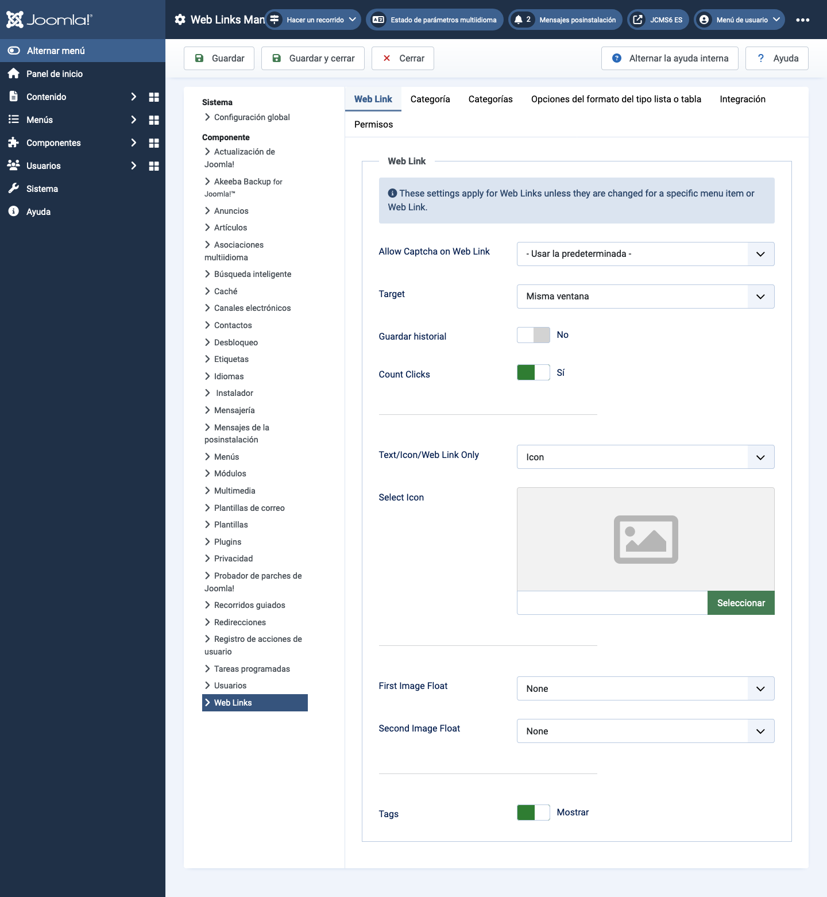

Joomla Help Screens
Options de Liens Web
Descripción
La configuración de Opciones de Enlaces Web permite establecer los parámetros utilizados globalmente para todos los elementos del menú de enlaces web.
Elementos Comunes
Algunos elementos de esta página se tratan en artículos de ayuda por separado:
Cómo acceder
- Selecciona Componentes -> Weblinks -> Enlaces en el menú del Administrador. Luego...
- Selecciona el botón Opciones de la barra de herramientas.
Captura de Pantalla

Pestaña de Enlace Web
- Permitir Captcha en Enlace Web Selecciona el plugin de captcha que se usará en el formulario de envío de enlaces web. Es posible que necesites ingresar la información requerida para tu plugin de captcha en el Gestor de Plugins. Si se selecciona 'Usar predeterminado', asegúrate de que un plugin de captcha esté seleccionado en la Configuración Global.
- Destino Ventana del navegador de destino cuando se selecciona el enlace.
- Contar Clics Si está en Sí, se registrará el número de veces que se ha hecho clic en el enlace.
- Texto/Ícono/Solo Enlace Web Muestra un texto, ícono o nada con el Enlace Web. Por defecto, es Ícono.
- Seleccionar Ícono Esto te permite seleccionar un archivo de imagen para usar como ícono predeterminado para los enlaces web. Cuando haces clic en el botón Seleccionar, se abre una ventana modal que te permite navegar entre los archivos de imagen en tu sitio.
- Flotación de Imagen Dónde mostrar la imagen en la página.
- Mostrar Etiquetas Mostrar u ocultar las etiquetas del feed.
Pestaña de Categoría
Las Opciones de Categoría controlan cómo se mostrarán los enlaces web cuando profundices para ver sus enlaces.
- Elegir un diseño Selecciona el diseño predeterminado para mostrar cuando haces clic en un enlace de Categoría. Si creas un diseño alternativo para una categoría, puedes seleccionarlo como predeterminado.
- Título de la Categoría Mostrar u ocultar el título de la categoría.
- Descripción de la Categoría Mostrar u ocultar la descripción de la categoría.
- Imagen de la Categoría Mostrar u ocultar la imagen de la categoría.
- Niveles de Subcategoría Cuántos niveles de subcategorías mostrar al mostrar una vista de categoría.
- Categorías Vacías Mostrar u ocultar las categorías que no contienen ningún ítem ni subcategorías.
- Descripciones de Subcategorías Mostrar u ocultar las descripciones de las subcategorías que se muestran.
- # Enlaces Web Mostrar u Ocultar el número de enlaces web en cada categoría.
- Mostrar Etiquetas Mostrar u Ocultar las etiquetas para una sola categoría.
Pestaña de Categorías
Estos ajustes se aplican a las Opciones de Categorías de Enlaces Web a menos que se cambien para un item de menú específico.
- Descripción de la Categoría de Nivel Superior Mostrar u ocultar la descripción de la categoría de nivel superior.
- Niveles de Subcategoría Cuántos niveles en la jerarquía mostrar.
- Categorías Vacías Mostrar u ocultar las categorías que no contienen ítems ni subcategorías.
- Descripciones de Subcategorías Mostrar u ocultar la descripción de cada subcategoría.
- # Enlaces Web Mostrar u Ocultar el número de enlaces web en cada categoría.
Pestaña de Diseños de Lista
Estos ajustes se aplican a las Opciones de Lista de Enlaces Web a menos que se cambien para un item de menú específico.
- Campo de Filtro El Campo de Filtro crea un campo de texto donde un usuario
puede ingresar un valor para filtrar los enlaces web mostrados en la lista.
- Ocultar: No mostrar un campo de filtro.
- Título: Filtrar por título del enlace web.
- Autor: Filtrar por nombre del autor.
- Visitas: Filtrar por el número de visitas de enlaces web.
- Selección de Despliegue Mostrar u ocultar el control de Selección de Despliegue # que permite al usuario seleccionar el número de ítems para mostrar en la lista.
- Encabezados de Tabla Mostrar u ocultar un encabezado sobre la tabla de enlaces web.
- Descripción de Enlaces Mostrar u ocultar la descripción del enlace web.
- Visitas Ocultar o mostrar el número de veces que se ha accedido a este enlace web.
Pestaña de Integración
Estos ajustes determinan cómo el Componente de Enlaces Web se integrará con otras extensiones.
- Enlace de Feed RSS Mostrar u ocultar las URL de los enlaces de feed. Un enlace de feed se mostrará como un ícono de feed en la barra de direcciones de la mayoría de los navegadores.
- Eliminar IDs de URLs Sí o No.
- Editar Campos Personalizados Sí o No.
Consejos
- Si eres un usuario principiante, puedes mantener los valores predeterminados aquí hasta que aprendas más sobre el uso de opciones globales.
- Si eres un usuario avanzado, puedes ahorrar tiempo creando buenos valores predeterminados aquí. Cuando configures elementos del menú y crees enlaces web, podrás aceptar los valores predeterminados para la mayoría de las opciones.
- Todos los valores establecidos aquí pueden ser anulados a nivel de elemento del menú, categoría o enlace web.
Traducido por openai.com